Colors meanings:
Binary Tree[0x16fd5b1e0] born at "/Users/anatolij/Documents/GitHub/Akinator/source/main.cpp": 8, name 'tree'
left subtree node
⮑ left subtree edge
right subtree node
⮑ right subtree edge
root node
⮑ unknown what edge
new node
unknown what node
DUMP #1: function TreeCtor was called from /Users/anatolij/Documents/GitHub/Akinator/source/main.cpp: 9

Binary Tree[0x1000b5660] born at "/Users/anatolij/Documents/GitHub/Akinator/source/Akinator_base.cpp": 8, name 'tree'
DUMP #2: function ReadAndCreateNode was called from /Users/anatolij/Documents/GitHub/Akinator/source/Akinator_base.cpp: 10
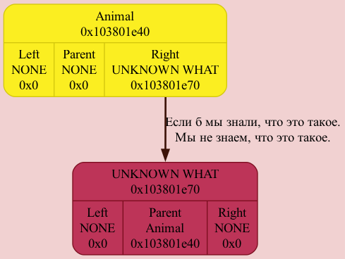
DUMP #3: function ReadAndCreateNode was called from /Users/anatolij/Documents/GitHub/Akinator/source/Akinator_base.cpp: 10
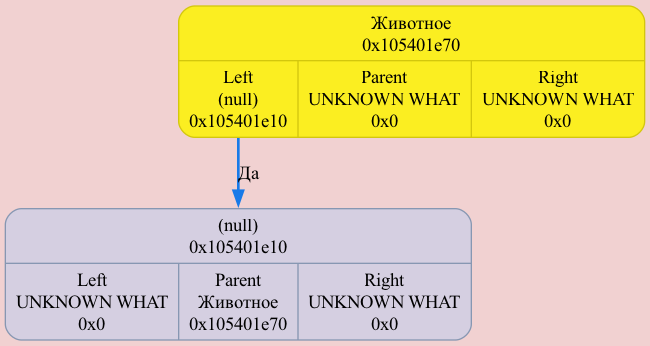
DUMP #4: function ReadAndCreateNode was called from /Users/anatolij/Documents/GitHub/Akinator/source/Akinator_base.cpp: 10
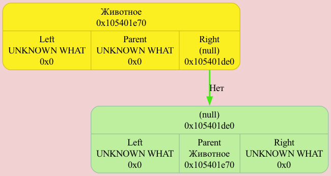
DUMP #5: function ReadAndCreateNode was called from /Users/anatolij/Documents/GitHub/Akinator/source/Akinator_base.cpp: 10
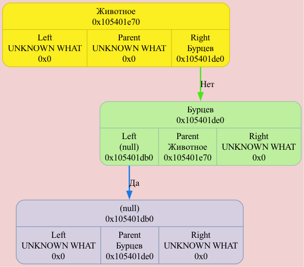
DUMP #6: function ReadAndCreateNode was called from /Users/anatolij/Documents/GitHub/Akinator/source/Akinator_base.cpp: 10
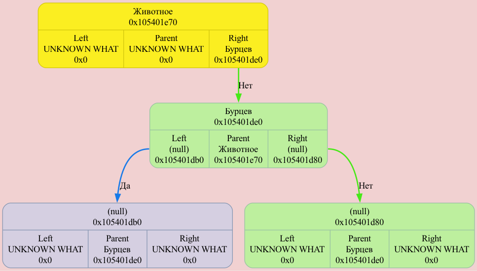
DUMP #7: function ReadAndCreateNode was called from /Users/anatolij/Documents/GitHub/Akinator/source/Akinator_base.cpp: 10
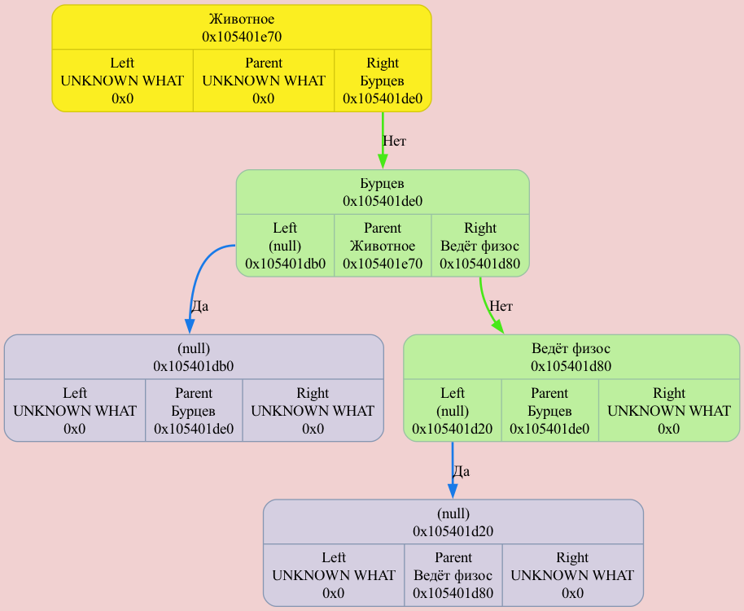
DUMP #8: function ReadAndCreateNode was called from /Users/anatolij/Documents/GitHub/Akinator/source/Akinator_base.cpp: 10

DUMP #9: function ReadAndCreateNode was called from /Users/anatolij/Documents/GitHub/Akinator/source/Akinator_base.cpp: 10
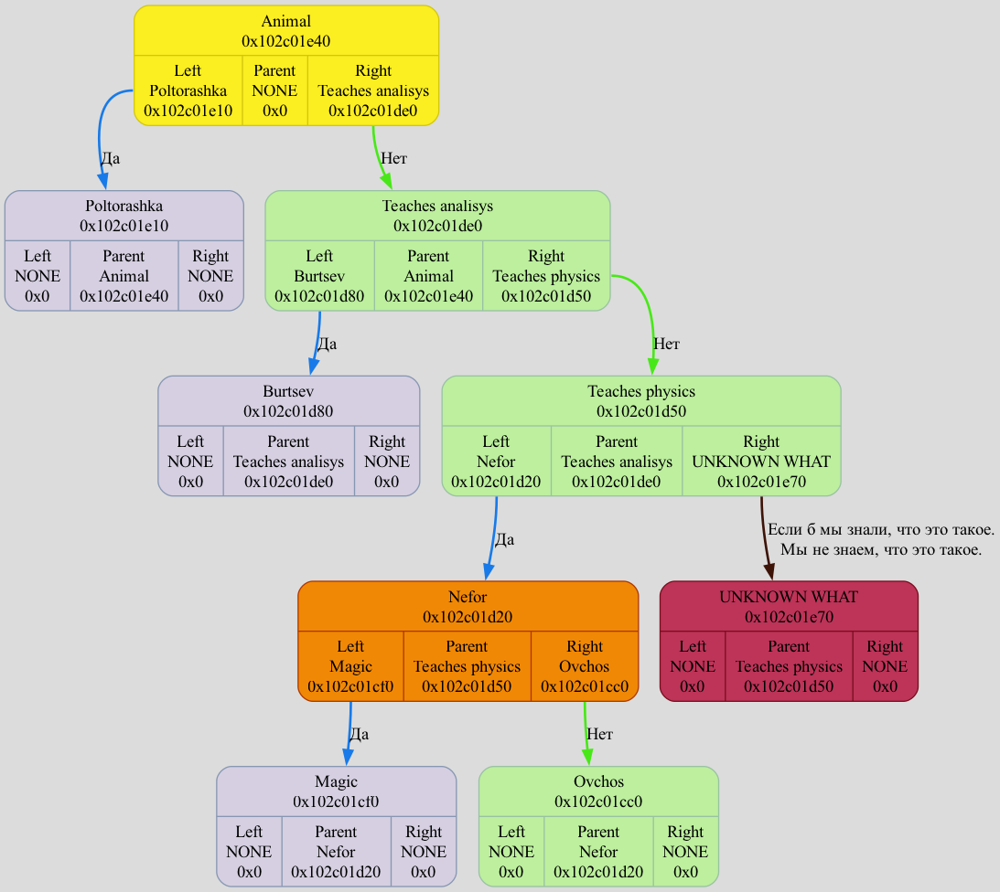
DUMP #10: function ReadAndCreateNode was called from /Users/anatolij/Documents/GitHub/Akinator/source/Akinator_base.cpp: 10
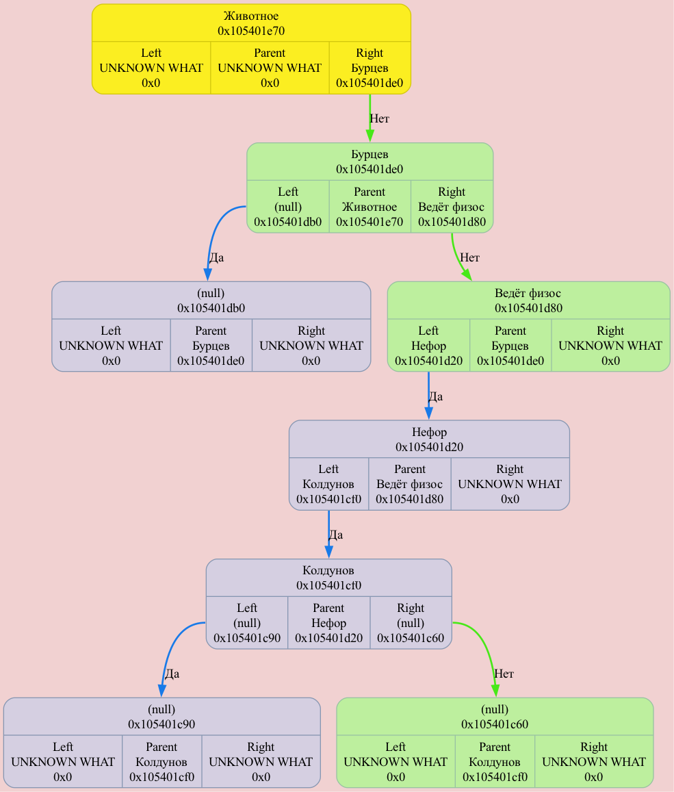
DUMP #11: function ReadAndCreateNode was called from /Users/anatolij/Documents/GitHub/Akinator/source/Akinator_base.cpp: 10
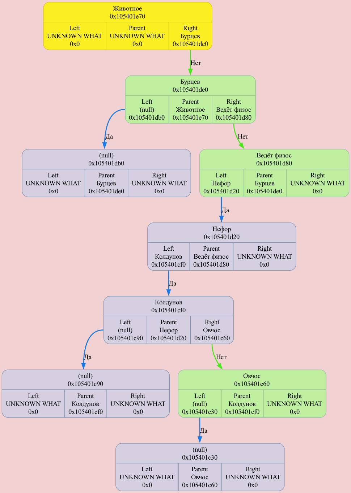
DUMP #12: function ReadAndCreateNode was called from /Users/anatolij/Documents/GitHub/Akinator/source/Akinator_base.cpp: 10
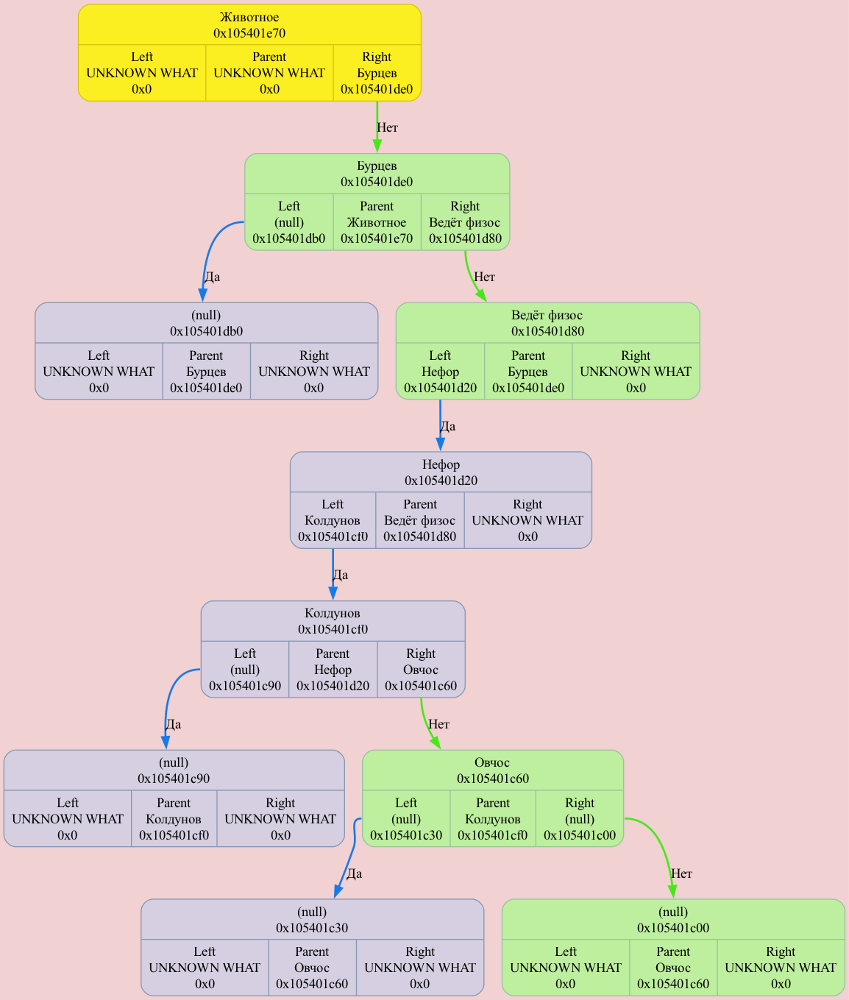
DUMP #13: function ReadAndCreateNode was called from /Users/anatolij/Documents/GitHub/Akinator/source/Akinator_base.cpp: 10
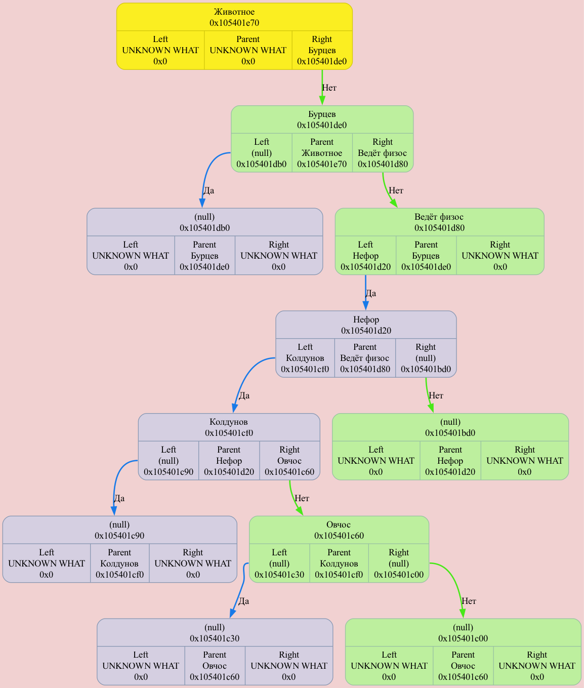
DUMP #14: function ReadAndCreateNode was called from /Users/anatolij/Documents/GitHub/Akinator/source/Akinator_base.cpp: 10
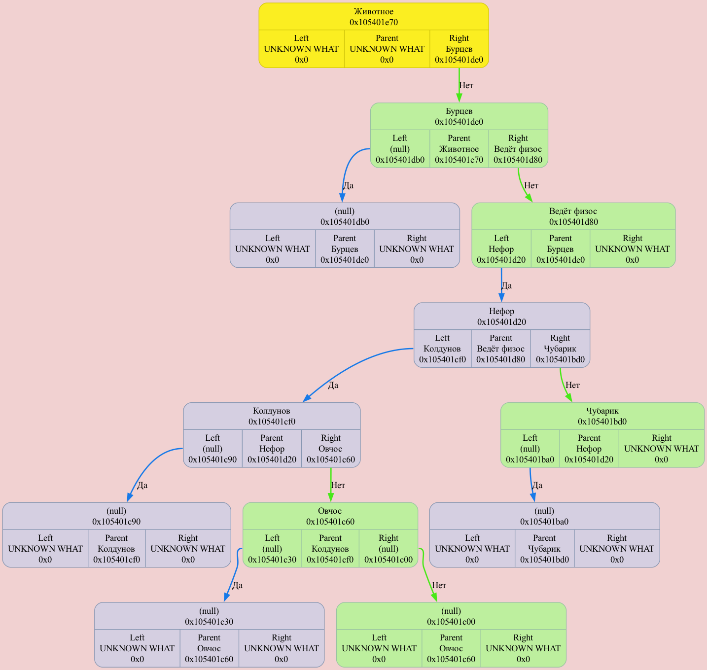
Binary Tree[0x16fd5b1e0] born at "/Users/anatolij/Documents/GitHub/Akinator/source/main.cpp": 8, name 'tree'
DUMP #15: function TreeDtor was called from /Users/anatolij/Documents/GitHub/Akinator/source/main.cpp: 13
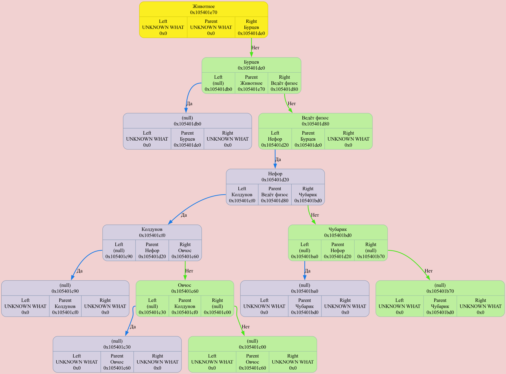